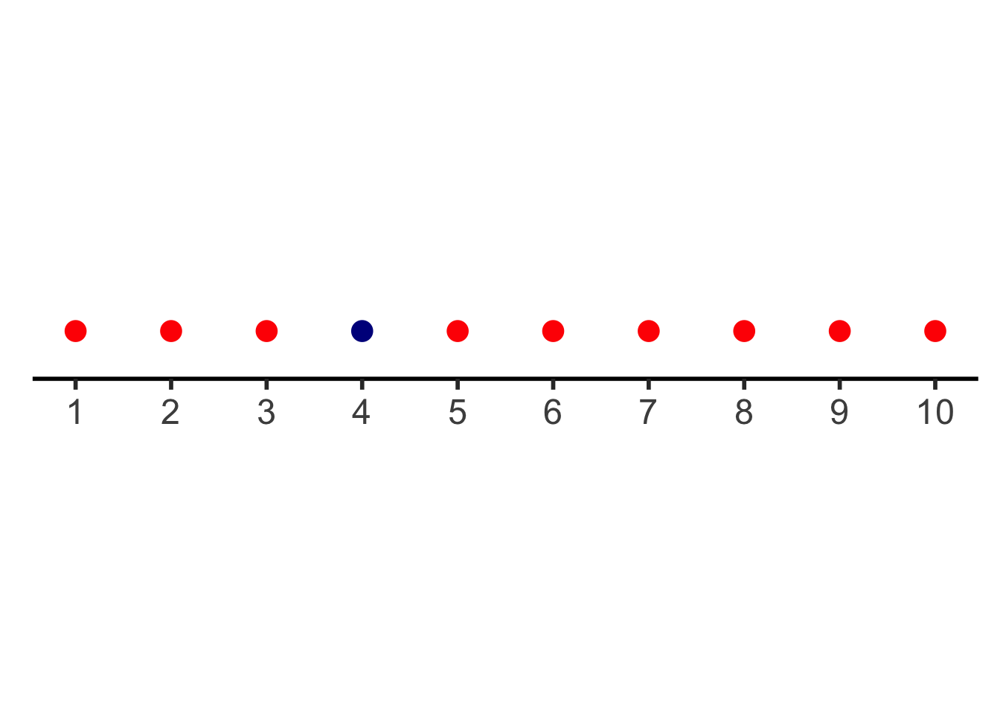
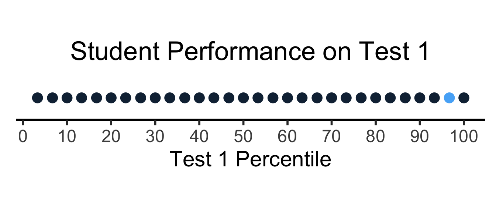

source("../_globals.r")Numberline
Code
library(tidyverse)── Attaching core tidyverse packages ──────────────────────── tidyverse 2.0.0 ──
✔ dplyr 1.1.2 ✔ readr 2.1.4
✔ forcats 1.0.0 ✔ stringr 1.5.0
✔ lubridate 1.9.2 ✔ tibble 3.2.1
✔ purrr 1.0.2 ✔ tidyr 1.3.0
── Conflicts ────────────────────────────────────────── tidyverse_conflicts() ──
✖ dplyr::filter() masks stats::filter()
✖ dplyr::lag() masks stats::lag()
ℹ Use the conflicted package (<http://conflicted.r-lib.org/>) to force all conflicts to become errorsCode
num_students <- 30
student_ids <- seq(from = 1, to = num_students)
# Test 1
t1_min_pts <- 0
t1_max_pts <- 268.3
t1_score_vals <- round(runif(num_students, t1_min_pts, t1_max_pts), 2)
t1_mean <- mean(t1_score_vals)
t1_sd <- sd(t1_score_vals)
get_t1_pctile <- function(s) round(100 * ecdf(t1_score_vals)(s), 1)
# Test 2
t2_min_pts <- -1
t2_max_pts <- 1.2
t2_score_vals <- round(runif(num_students, t2_min_pts, t2_max_pts), 2)
t2_mean <- mean(t2_score_vals)
t2_sd <- sd(t2_score_vals)
get_t2_pctile <- function(s) round(100 * ecdf(t2_score_vals)(s), 2)
score_df <- tibble(
id=student_ids,
t1_score=t1_score_vals,
t2_score=t2_score_vals
)
score_df <- score_df |> arrange(desc(t1_score))
score_df# A tibble: 30 × 3
id t1_score t2_score
<int> <dbl> <dbl>
1 3 264. 0.66
2 8 254. 0.79
3 25 247. 0.71
4 29 242. -0.75
5 6 241. 0.39
6 10 226. 0.73
7 14 219. -0.1
8 23 205. 1
9 12 205. 0.98
10 30 203. -0.53
# ℹ 20 more rowsscore_df <- score_df |>
mutate(
t1_z_score = round((t1_score - t1_mean) / t1_sd, 2),
t2_z_score = round((t2_score - t2_mean) / t2_sd, 2),
t1_pctile = get_t1_pctile(t1_score),
t2_pctile = get_t2_pctile(t2_score)
) |>
relocate(t1_pctile, .after = t1_score) |>
relocate(t2_pctile, .after = t2_score)# https://community.rstudio.com/t/number-line-in-ggplot/162894/4
d <- data.frame(x = c(1,2,3,4,5,6,7,8,9,10),
y = c(0,0,0,0,0,0,0,0,0,0),
group = c("A","A","A","B","A","A","A","A","A","A"))
d |> ggplot(aes(x,y)) +
geom_point(aes(col = group, size=10)) +
scale_color_manual(values = c("red", "darkblue")) +
scale_x_continuous(breaks=c(1,2,3,4,5,6,7,8,9,10)) +
dsan_theme("half") +
theme(legend.position="none",
rect = element_blank(),
panel.grid = element_blank(),
axis.title = element_blank(),
axis.text.y = element_blank(),
axis.line.y = element_blank(),
axis.ticks.y=element_blank()
) +
guides(x = NULL) +
coord_fixed(ratio = 10)
# https://community.rstudio.com/t/number-line-in-ggplot/162894/4
# Add a binary indicator to track "me" (student #8)
score_df <- score_df |>
mutate(is_me = as.numeric(id == 8))
library(ggplot2)
t1_line_data <- tibble(
x = score_df$t1_pctile,
y = 0,
me = score_df$is_me
)
ggplot(t1_line_data, aes(x,y,col=me)) +
geom_point(aes(size=g_pointsize)) +
scale_x_continuous(breaks=seq(from=0, to=100, by=10)) +
scale_color_continuous(c(0,1)) +
dsan_theme("half") +
theme(
legend.position="none",
#rect = element_blank(),
#panel.grid = element_blank(),
axis.title.y = element_blank(),
axis.text.y = element_blank(),
axis.line.y = element_blank(),
axis.ticks.y=element_blank()
) +
labs(
title = "Student Performance on Test 1",
x = "Test 1 Percentile"
) +
coord_fixed(ratio = 100)